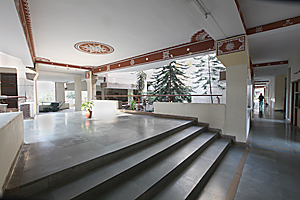

The Centre for Cultural Resources and Training (CCRT) is one of the premier institutions working in the field of linking education with culture. Established in 1979, pioneered by Smt. Kamaladevi Chattopadhyay and Dr. Kapila Vatsyayan, it functions as an autonomous organization under the aegis of Ministry of Culture, Government of India. At the philosophical core of the CCRT lies a commitment to holistic education, encompassing the cognitive, emotional and spiritual development of children. To this end the CCRT conducts education grounded in cultural knowledge and understanding as conducive to clarity, creativity, independence of thought, tolerance and compassion
CCRT has been contributing to the strengthening of the foundation of the nation by making education culture based and meaningful. The CCRT has its headquarters in New Delhi and three Regional Centres at Udaipur in the west, Hyderabad in the south and Guwahati in the north-east to facilitate the widespread dissemination of Indian art and culture. The CCRT revitalizes the education system by creating an understanding and awareness among teachers, students and educational administrators about the plurality of the regional cultures of India and integrating this knowledge with education.
CCRT’s main thrust is to make variety of training programmes for in-service teachers, teacher educators, educational administrators and students throughout the country. It also organizes special training programmes for the physically and mentally challenged children. The training programmes provide an understanding and appreciation of the philosophy, aesthetics and beauty inherent in Indian art and culture and focus on formulating methodologies for incorporating a cultural component in curriculum teaching. The role of culture in science and technology, housing, agriculture, sports i.e. in all aspects of development and growth is emphasised.
The importance of in-service teachers training was also stressed. Change in educational system can only be brought about if the teachers have been trained and prepared to
understand and recognise the need for a changes in the methodologies of teaching. Since the teacher training is limited to nine months, it cannot possibly produce teachers
well-versed in crafts. Therefore trained craftsmen though not fully educated in the formal way, should be associated with the trained teachers in the teaching of crafts to
the pupils. Educational visits to museums, monuments and historical sites are arranged to expose students to the rich Indian cultural heritage.

Organizes theoretical and theme based academic programmes on Indian art and culture for teachers and students.
Conducts Workshops to provide practical training and knowledge in crafts to be incorporated in school curriculum. Various art activities like drama, music, narrative art forms, classical dances, etc. are organized to create an awareness of the regional variations and richness of cultural expressions of our country.
Organizes various educational activities for school students, teachers and children belonging to governmental and non-governmental organizations under its Extension Services and Community Feedback Programme, to create an awareness of the need for conservation of the natural and cultural heritage.
Prepares publications and other audio-visual material which attempt to provide an understanding and appreciation of the different aspects of Indian art and culture.
Implements Cultural Talent Search Scholarship Scheme for providing facilities to young talented children in the 10-14 age group to study one or the other art form.
The CCRT also implements some other important policies of the Ministry of Culture, e.g., awarding Scholarship to Young Artiste, Junior and Senior Fellowships focusing on "in-depth study/ research" in various facets of culture, these include New Emerging Areas of Cultural Studies. The CCRT has started organizing training programmes on arts management under NICHM Scheme, a new initiative of Ministry of Cultural, Govt. of India. The CCRT is also implementing Cultural Heritage Young Leadership Programme, aimed at promotion of social values and community engagement amongst the youth of the Country.